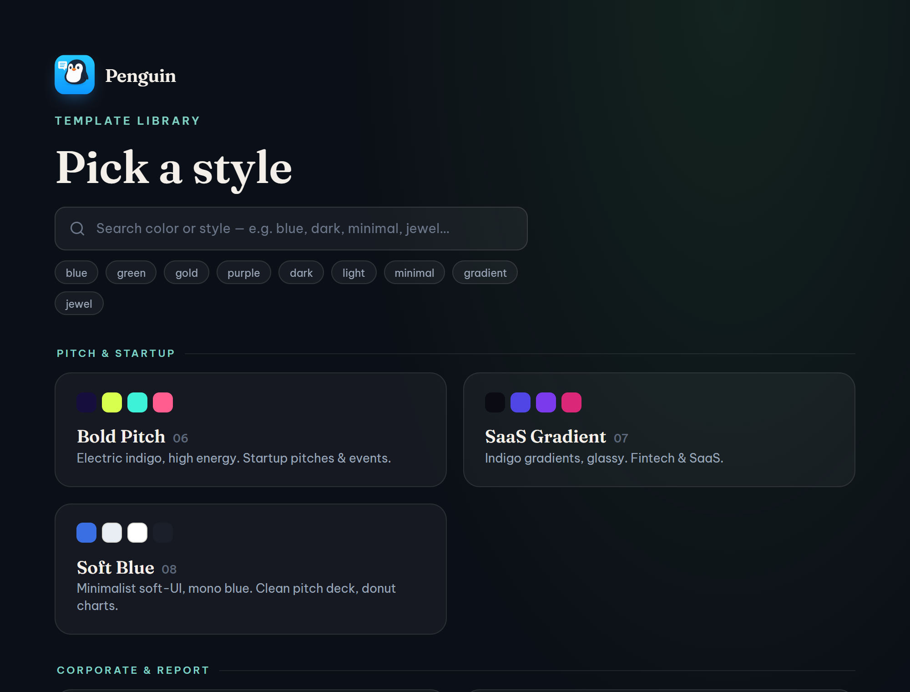

Side project · Full-stack AI · Next.js
Penguin: a local-first multi-agent AI workspace
- Built a desktop app where a team of configurable AI agents plan, hand off work, and produce real files, not just chat.
- Agents export Word, Excel (with live formulas), PDF and native editable PowerPoint, plus interactive HTML dashboards.
- Designed an installable skills system: capability packs injected into an agent's prompt at runtime.
- Engineered a warm session pool and an embedded Python render pipeline for fast, fully offline generation.